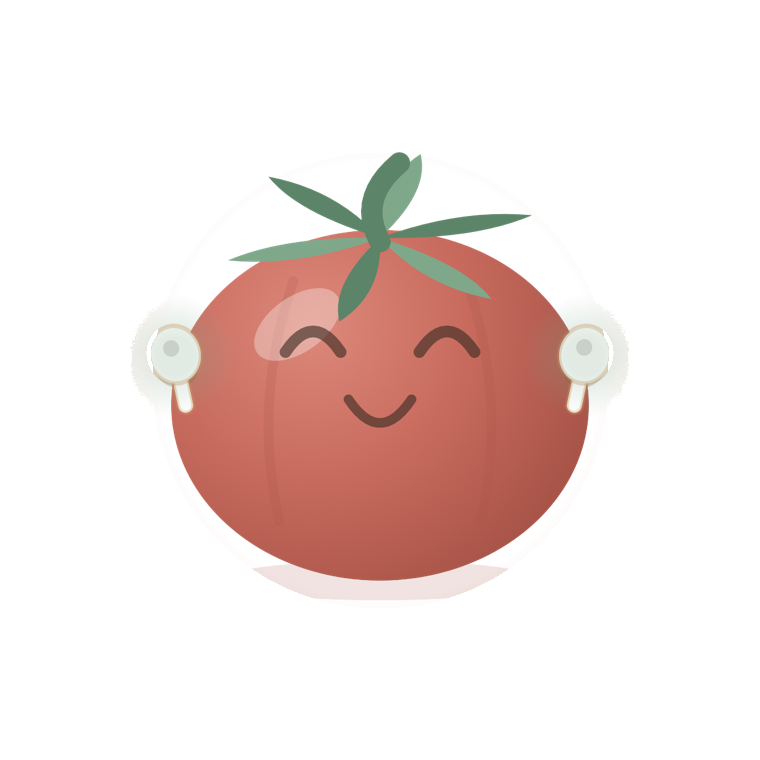
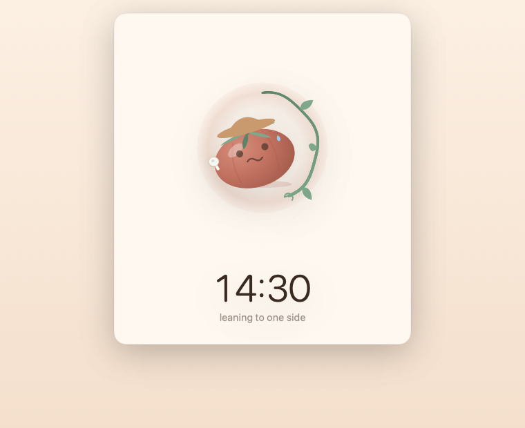
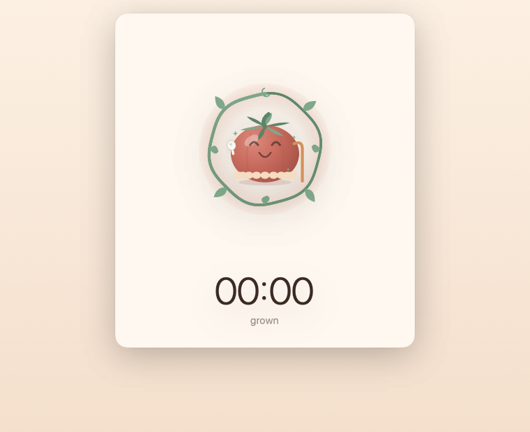
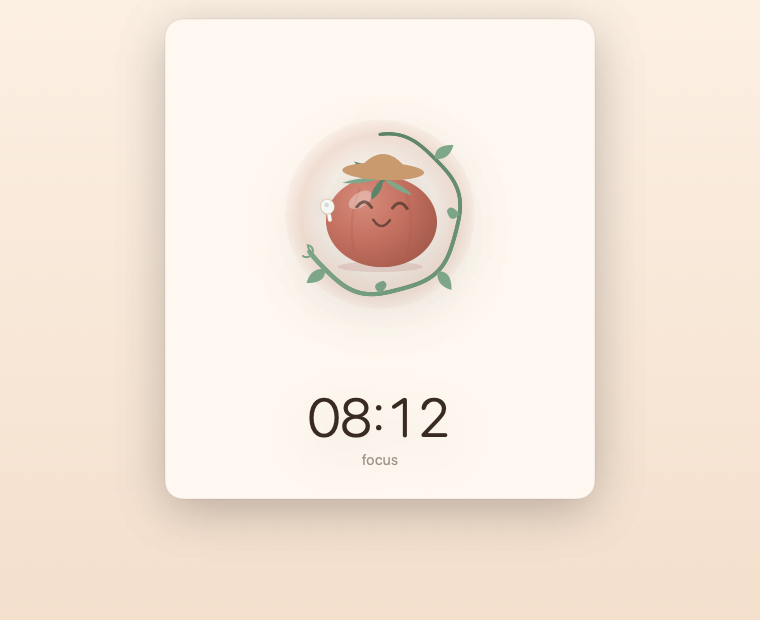

Your AirPods already know
Nobody told you. Your AirPods could have.

Free, forever. Works on Mac with AirPods.
The better the focus, the worse the posture. By the time your body complains, the damage to the afternoon is already done.
The bit everyone shows their friends
Lean, and it leans. Slump, and it slumps with you.

Watching a little tomato mimic you is stupidly delightful the first time — and the tenth. Somehow it also fixes your posture.
Something to sit up for
Slouch and it stays pale and green.

No alarms. No pop-ups. No nagging. You'll catch yourself straightening up for no reason other than wanting a nicer tomato. That's the point.
No camera watching you. No band around your chest. Just the earbuds already in your ears.
Half of us wear one and keep an ear on the room. It works with one — and your tomato wears one too.
Sit however you like. That becomes the mark. It only speaks up when you've drifted from your own comfortable.
And yes, it's a proper focus timer

Finish, and your tomato is harvested into a crate you can flip back through. Quit halfway and it's squashed into ketchup. You won't want the ketchup.
Everything happens on your Mac and stays there.
There is no account to make and no email to hand over. The app cannot send anything anywhere — it has no way to reach the internet at all. How you sit, when you work, how long you lasted: that stays on your computer, and I never see any of it.
And it's free. Not free-with-a-catch. There is nothing to buy, no subscription, and no ads — now or later.
It won't tell you your posture is correct — nothing in your ear can see your spine, and any app promising that is selling you something. What it does is remember how you sat when you were comfortable, and let you know, kindly, when you've wandered off. That turns out to be all most of us needed.
Mail me and I'll actually reply.